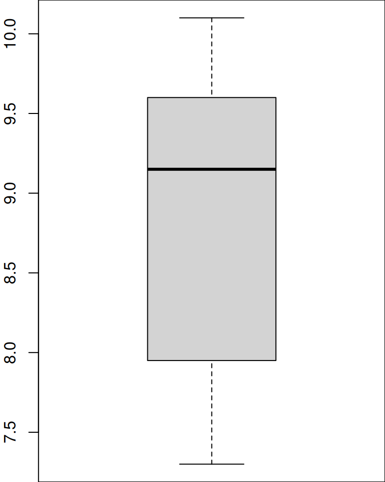
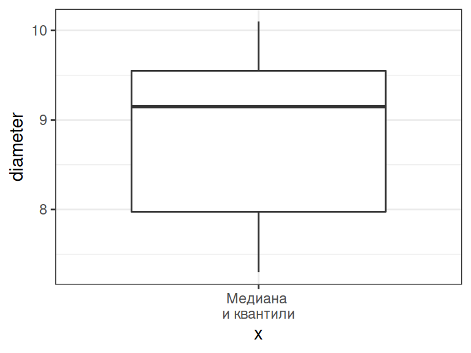
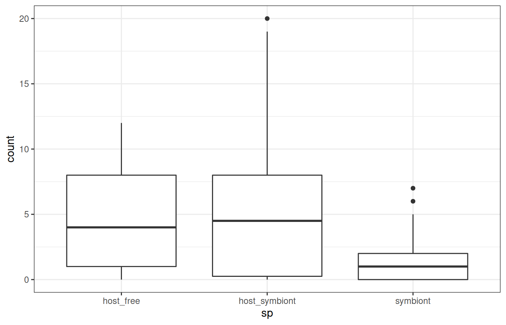
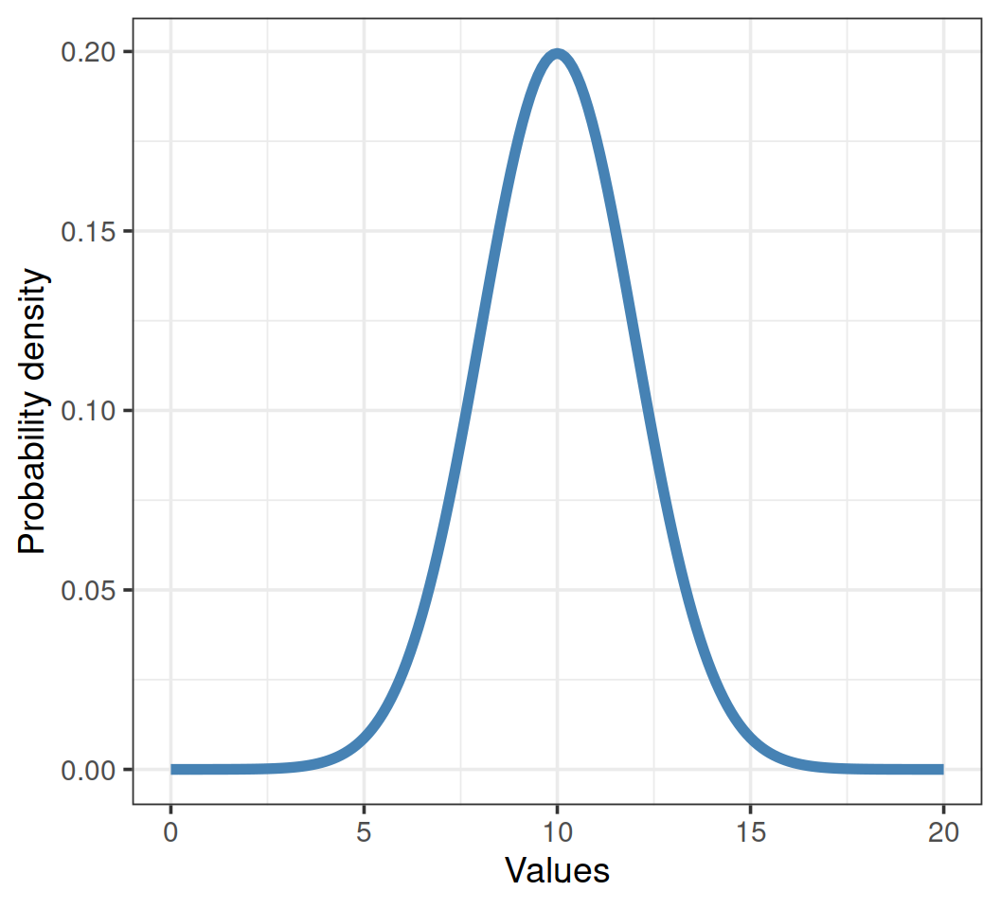
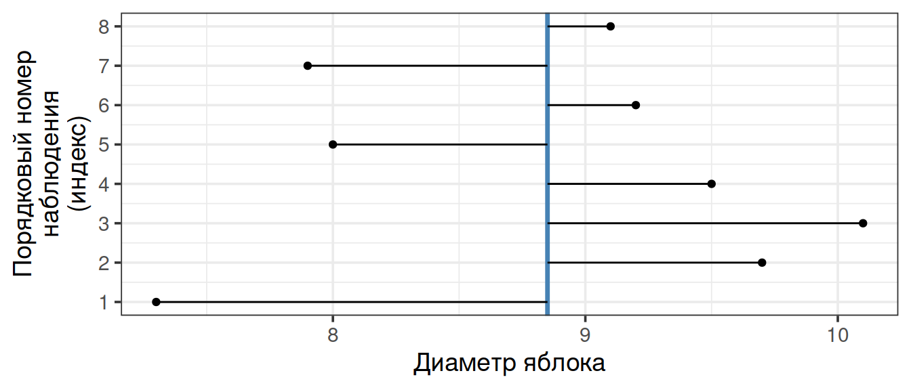
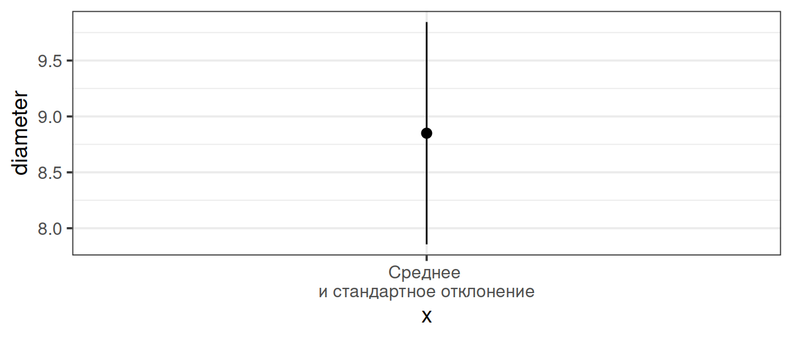
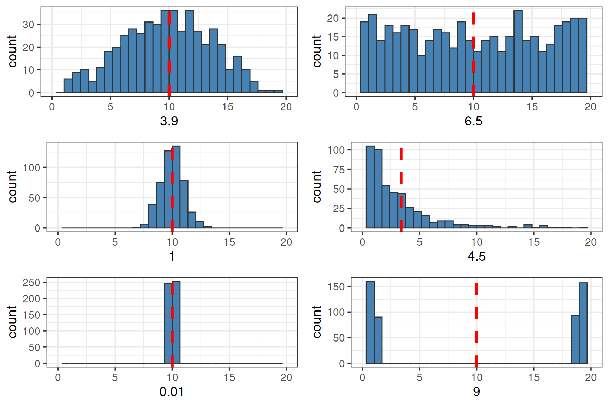
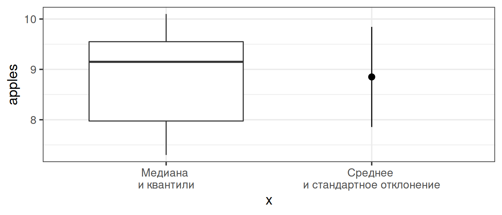

Характеризуем данные
Характеризуем данные через связки описательных статистик
Центральные тенденции
(Statistics of location)
Медиана (Median)
Среднее значение (Mean)
Меры разброса
(Statistics of dispersion)
Квантили (Quantiles)
Дисперсия (Variance),
cтандартное отклонение (Standard Deviation)
ЧАСТЬ 1. Медиана и квантили
Медиана
Предположим, мы занимаемся селекцией яблонь и хотим охарактеризовать урожай любимой яблони, на которую возлагаем большие надежды.
apples <- c(7.3, 9.7, 10.1, 9.5, 8.0, 9.2, 7.9, 9.1)
Медиана
Наши данные в исходном виде выглядят примерно так:
apples
## [1] 7.3 9.7 10.1 9.5 8.0 9.2 7.9 9.1

Чтобы увидеть медиану, мы должны ранжировать, или отсортировать, наш вектор по возрастанию:
sort(apples)
## [1] 7.3 7.9 8.0 9.1 9.2 9.5 9.7 10.1

Медиана
В ранжированном ряду медиана расположена так, что слева и справа от нее находится равное число измерений.
- Если n нечетное, то медиана = значение с индексом \(\frac{n+1}{2}\).
- Если n четное, то медиана посередине между \(\frac{n}{2}\) и \(\frac{n+1}{2}\) значениями.
sort(apples)
## [1] 7.3 7.9 8.0 9.1 9.2 9.5 9.7 10.1
Медиана находится в промежутке между значениями 9.1 и 9.2, т.е. 9.15

median(apples) # Проверим себя
## [1] 9.15
Медиана устойчива к выбросам
Представим, что наши измерения пострадали от неаккуратности. Допустим сотрудник, которому мы поручили измерять яблоки, измерил также арбуз и записал этот результат вместе со всеми остальными.
apples2 <- c(apples, 68) # Создадим вектор с новым значением sort(apples2)
## [1] 7.3 7.9 8.0 9.1 9.2 9.5 9.7 10.1 68.0
Что станет с медианой? Сильно ли она изменится?
median(apples2)
## [1] 9.2
Медиана устойчива к выбросам, а среднее - нет
Давайте для сравнения посмотрим на среднее.
mean(apples)
## [1] 8.85
mean(apples2)
## [1] 15.4
Единственное наблюдение-выброс сильно повлияет на величину среднего значения.
Квантили
Квантили — это значения, которые делят ряд наблюдений на равные части.
Они называются по-разному в зависимости от числа частей.
Примеры квантилей:
- 2-квантиль (“два-квантиль”) — медиана
- 4-квантиль (“четыре-квантиль”)— квартиль
- 100-квантиль (“сто-квантиль”)— перцентиль
Квартили
Квартиль — частный случай квантиля.
Квартили делят распределение на четыре равные части, каждая из которых включает по 25% значений.
- I квартиль отсекает как раз 25%.
- II квартиль — 50%. Это медиана.
- III квартиль отсекает 75% значений.
Квартили можно найти при помощи функции quantile()
quantile(x = apples, probs = c(0.25, 0.5, 0.75))
## 25% 50% 75% ## 7.97 9.15 9.55
5-number summary
Функция quatile(x) без указания значений вероятностей (probs) покажет нам квартили, минимум и максимум.
quantile(apples)
## 0% 25% 50% 75% 100% ## 7.30 7.97 9.15 9.55 10.10
5-number summary — удобное краткое описание данных.
Персентили
Персентиль — это частный случай квантиля. Всего 99 персентилей, они делят ряд наблюдений на 100 частей.
Ничто не помешает нам узнать, например, какие значения отсекают 10% или 99% значений выборки. Подставим соответствующие аргументы:
quantile(apples, probs = c(0.1, 0.99))
## 10% 99% ## 7.72 10.07
Боксплот: 5-number summary на графике
boxplot(apples)

Отложим числа, характеризующие выборку, по оси Y:
- жирная линия — медиана,
- нижняя и верхняя границы “коробки” — это I и III квантили,
- усы — минимум и максимум.
Расстояние между I и III квартилями (высота “коробки”) называется интерквартильное расстояние
Если в выборке есть выбросы (значения, отстоящие от границ “коробки” больше чем на 1.5 интерквартильных расстояния), то они будут изображены отдельными точками.
Подготовим все, чтобы построить график в ggplot2
library(ggplot2) theme_set(theme_bw()) apple_data <- data.frame(diameter = apples) head(apple_data)
## diameter ## 1 7.3 ## 2 9.7 ## 3 10.1 ## 4 9.5 ## 5 8.0 ## 6 9.2
Боксплот можно построить при помощи geom_boxplot()
ggplot(data = apple_data) + geom_boxplot(aes(x = 'Медиана \nи квантили', y = diameter))

x— категория (переменная или текстовое обозначение)y— зависимая переменная
Case study: диатомовые водоросли в желудках фильтраторов.
Case study: диатомовые водоросли в желудках фильтраторов. Самостоятельная работа.
В морских сообществах встречаются два вида фильтраторов, один из которых любит селиться прямо на поверхности тела другого.
Tegella armifera — это вид-хозяин. Он может жить как сам по себе, так и вместе с симбионтом.
Loxosomella nordgardi — вид-симбионт. Он практически никогда не встречается в одиночестве.
Данные: Юта Тамберг

Case study: диатомовые водоросли в желудках фильтраторов.
В файле diatome_count.csv дано количество диатомовых водорослей в желудках этих животных. Прочитаем эти данные и посмотрим на них:
diatoms <- read.table("data/diatome_count.csv",
header = TRUE, sep = "\t")
В таблице 2 переменные:
sp— вид,count— число водорослей в желудке.
В переменной sp есть три варианта значений:
- “host_free” — хозяин без симбионта,
- “host_symbiont” — хозяин с симбионтом,
- “symbiont” — симбионт.
Все ли правильно открылось?
Смотрим первые несколько строк:
head(diatoms)
## sp count ## 1 host_free 10 ## 2 host_free 0 ## 3 host_free 1 ## 4 host_free 0 ## 5 host_free 2 ## 6 host_free 0
Смотрим структуру:
str(diatoms)
## 'data.frame': 162 obs. of 2 variables: ## $ sp : chr "host_free" "host_free" "host_free" "host_free" ... ## $ count: int 10 0 1 0 2 0 1 0 8 0 ...
Есть ли пропущенные значения?
sum(! complete.cases(diatoms))
## [1] 5
Что это за случаи?
diatoms[! complete.cases(diatoms), ]
## sp count ## 54 host_free NA ## 159 symbiont NA ## 160 symbiont NA ## 161 symbiont NA ## 162 symbiont NA
Задание 1
## sp count ## 1 host_free 10 ## 2 host_free 0 ## 3 host_free 1 ## 4 host_free 0 ## 5 host_free 2 ## 6 host_free 0
Ваша задача рассчитать 5-number summary для количества диатомовых в желудках хозяев и симбионтов (всех трех категорий).
Решение
# 5-number summary для хозяев без симбионтов host_f <- diatoms$count[diatoms$sp == "host_free"] quantile(host_f, na.rm = TRUE)
## 0% 25% 50% 75% 100% ## 0 1 4 8 12
# Для хозяев с симбионтами host_s <- diatoms$count [diatoms$sp == "host_symbiont"] quantile(host_s, na.rm = TRUE)
## 0% 25% 50% 75% 100% ## 0.00 0.25 4.50 8.00 20.00
# Для одиноких симбионтов symbiont <- diatoms$count [diatoms$sp == "symbiont"] quantile(symbiont, na.rm = TRUE)
## 0% 25% 50% 75% 100% ## 0 0 1 2 7
Решение (более сложный, но краткий способ)
tapply() — одна из функций семейства *pply().
split — apply — combine
Функция tapply() берет вектор X и…
- делит (split) его на части по значениям в векторе
INDEX - применяет (apply) к каждой части функцию
FUN - соединяет (combine) результаты в одно целое в зависимости от их свойств
tapply(X = diatoms$count, INDEX = diatoms$sp, FUN = quantile, na.rm = TRUE)
## $host_free ## 0% 25% 50% 75% 100% ## 0 1 4 8 12 ## ## $host_symbiont ## 0% 25% 50% 75% 100% ## 0.00 0.25 4.50 8.00 20.00 ## ## $symbiont ## 0% 25% 50% 75% 100% ## 0 0 1 2 7
Боксплоты в ggplot2
Формат данных несколько сложен для человеческого глаза, зато очень подходит для ggplot.
ggplot(data = diatoms, aes(y = count, x = sp)) + geom_boxplot()

Медиана и квартили: непараметрические характеристики выборки
Главный плюс (но так же и минус) связки медиана + квартили это ее независимость от формы распределения.
Будь оно симметричным или с хвостом, 5-number summary опишет, а боксплот нарисует его с минимумом искажений.
Но бывают случаи, когда приходится применять более специальные, но и более информативные характеристики.
ЧАСТЬ 2. Нормальное распределение - первое знакомство
Все распределения равны, но некоторые равнее
Это непрерывное распределение, получаемое из мерных данных. Однако, многие распределения других типов тоже могут приближаться к нормальному.

Относительная частота и плотность вероятности

На оси Y может быть отложена относительная частота значений Х в эмпирическом распределении, или вероятность из теоретического распределения.
На оси Х отложены значения Х в интервале от 0 до 20, в действительности же кривая простирается от \(-\infty\) до \(+\infty\)
Площадь под кривой = 1. Интегрируя кривую на промежутке \((k,..,l)\), можно узнать вероятность встречи значений в этом промежутке \((x_k,...x_l)\).
Но нельзя рассчитать вероятность одного значения \(X = x_k\), так как это точка, и под ней нет площади.
Приятные особенности нормального распределения
Нормальных кривых бесконечно много, и их описывает формула с параметрами \(\mu\) и \(\sigma\).
\[f(x) = \frac {1}{\sigma \sqrt{2 \pi}}\, e^{-\cfrac{(x-\mu)^2}{2\sigma^2}}\]
- \(\mu\) — среднее,
- \(\sigma\) — стандартное отклонение.
Достаточно знать значения этих двух параметов, чтобы восстановить или смоделировать любое нормальное распределение. И наоборот, если данные в выборке распределены нормально, то мы можем оценить параметры этого распределения.
ЧАСТЬ 3. Среднее и стандартное отклонение
Центральная тенденция
Среднее арифметическое
\[\bar{x}=\frac{\sum{x_i}}{n}\]
Рассчитаем вручную и проверим:
sum(apples) / length(apples)
## [1] 8.85
mean(apples)
## [1] 8.85
Как оценить разброс значений?
Девиата (отклонение)
— это разность между значением вариаты (измерения) и средним:
\[x_i - \bar{x}\]
raw_deviates <- apples - mean(apples) raw_deviates
## [1] -1.55 0.85 1.25 0.65 -0.85 0.35 -0.95 0.25

Меры разброса
Девиаты не годятся как мера разброса
К сожалению мы не можем просто сложить все значения девиат и поделить их на объем выборки. Сумма девиат всегда будет равна нулю.
round(sum(raw_deviates))
## [1] 0
\[\begin{aligned} \sum{(x_i - \bar{x})} &= \sum x_i - \sum \bar x = \\ &= \sum x_i - n \bar x = \\ &= \sum x_i - n \cfrac{\sum x_i}{n} = 0 \end{aligned}\]
Меры разброса
Сумма квадратов = SS, Sum of Squares
Избавиться от знака девиаты можно, возведя значение в квадрат.
\[SS = \sum{{(x_i - \bar{x})}^2} \ne 0\]
sum(raw_deviates^2)
Но на что разделить \(SS\), чтобы получить меру усредненного отклонения значений от среднего?
Меры разброса
Как усреднить отклонения от среднего значения?
Мы не можем делить на \(n\), поскольку отклонения от среднего \(x_i - \bar x\) не будут независимы.
Что это значит? Сумма отклонений всегда равна нулю \(\sum{(x_i - \bar{x})} = 0\).
Поэтому, если мы знаем \(\bar x\) и \(n - 1\) отклонений, то всегда сможем точно вычислить последнее отклонение.
\(n - 1\) — это число независимых значений (число степеней свободы — degrees of freedom).
Меры разброса
Дисперсия = MS, Mean Square, Variance
Если мы теперь поделим сумму квадратов на объем выборки минус 1, то получим дисперсию по этой выборке.
\[s^2=\frac{\sum{(x_i - \bar{x})^2}}{n - 1}= \frac{SS}{n - 1}\]
sum(raw_deviates^2) / (length(apples) - 1) var(apples)
Дисперсию не получится нарисовать на графике, т.к. там используются не отклонения, а их квадраты
Меры разброса
Среднеквадратичное/стандартное отклонение = Standard Deviation
Квадратный корень из дисперсии позволит вернуться к исходным единицам измерения
\[s = \sqrt{s^2} = \sqrt{\frac{\sum{(x_i - \bar{x})^2}}{n - 1}} = SD\]
Стандартное отклонение — это средняя величина отклонения, и ее уже можно изобразить на графике.
sqrt(sum(raw_deviates^2) / (length(apples) - 1)) sd(apples)
Среднее и стандартное отклонение при помощи stat_summary()
ggplot(data = apple_data) +
stat_summary(geom = 'pointrange', fun.data = mean_sdl,
fun.args = list(mult = 1),
aes(x = 'Среднее \nи стандартное отклонение', y = diameter))

stat_summary() использует geom_pointrange()
точка — среднее, усы изображают \(\pm\) стандартное отклонение
mean_sdl() рассчитывает координаты точки и усов, ее аргумент mult = 1 показывает, сколько стандартных отклонений отложить
Особенности применения связки
только вместе,
чувствительны к выбросам,
плохо работают с несимметричными распределениями.
Сравните разброс (стандартное отклонение) в выборках
Проверим себя

Задание 2
Из 5 положительных чисел создайте выборку со средним = 10 и медианой = 7
Решение
В выборке с медианой = 7 и n = 5, мы точно знаем: (а) одно из значений должно быть равно 7, (б) два значения должны быть меньше, и два — больше 7.
Создадим вектор, в котором одно значение задано, а три других просто придумаем:
example <- c(2, 5, 7, 10)
Среднее это сумма всех значений выборки, поделенная на ее объем. Умножив среднее на 5 получим сумму всех значений.
Определим недостающее и проверим себя:
10 * 5 - sum(example)
## [1] 26
example <- c(2, 5, 7, 10, 26) #перезапишем вектор mean(example)
## [1] 10
Как соотносятся способы оценки центра и размаха в выборке?
ggplot(data = apple_data) +
geom_boxplot(aes(x = 'Медиана \nи квантили', y = apples)) +
stat_summary(geom = 'pointrange', fun.data = mean_sdl,
fun.args = list(mult = 1),
aes(x = 'Среднее \nи стандартное отклонение', y = diameter))

Медиана и среднее дают сходные результаты, если выборка не содержит выбросов (сильно отличающихся от других наблюдений).
Take-home messages
- Описательные статистики ходят только в связке.
- Выбирая между медианой и средним, учитывайте природу данных.